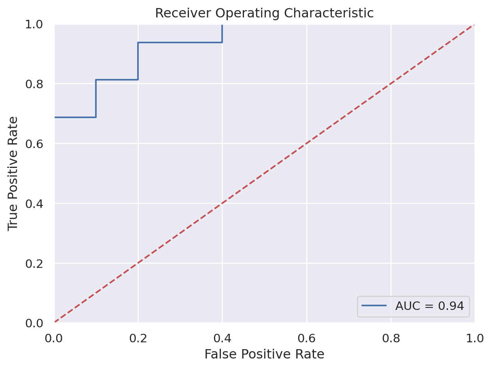
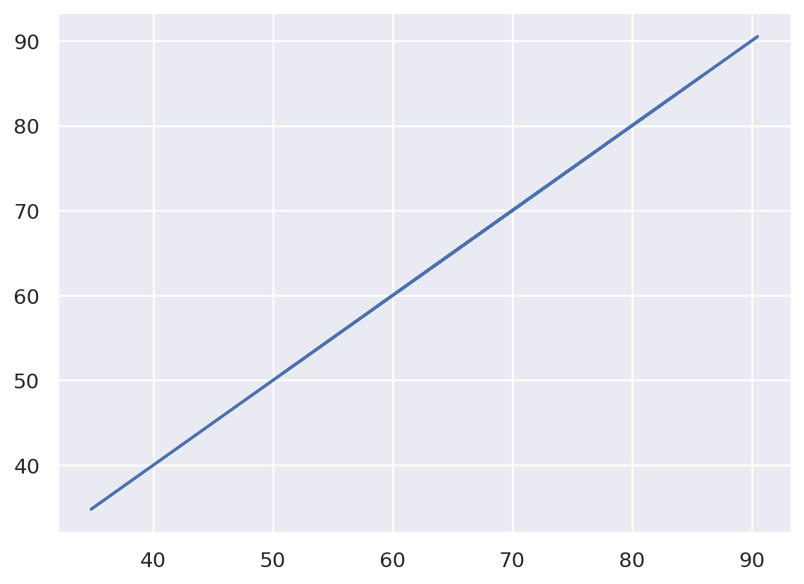
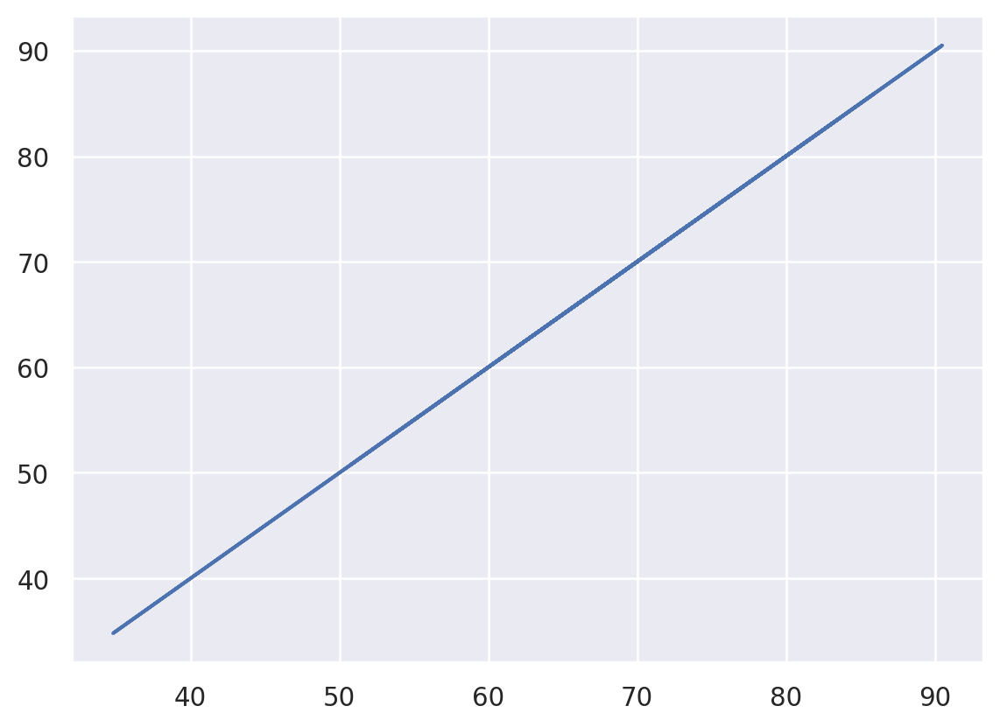
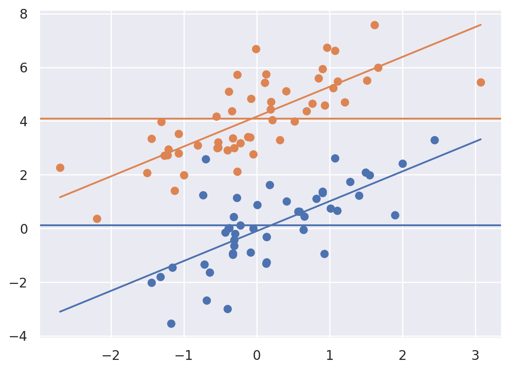
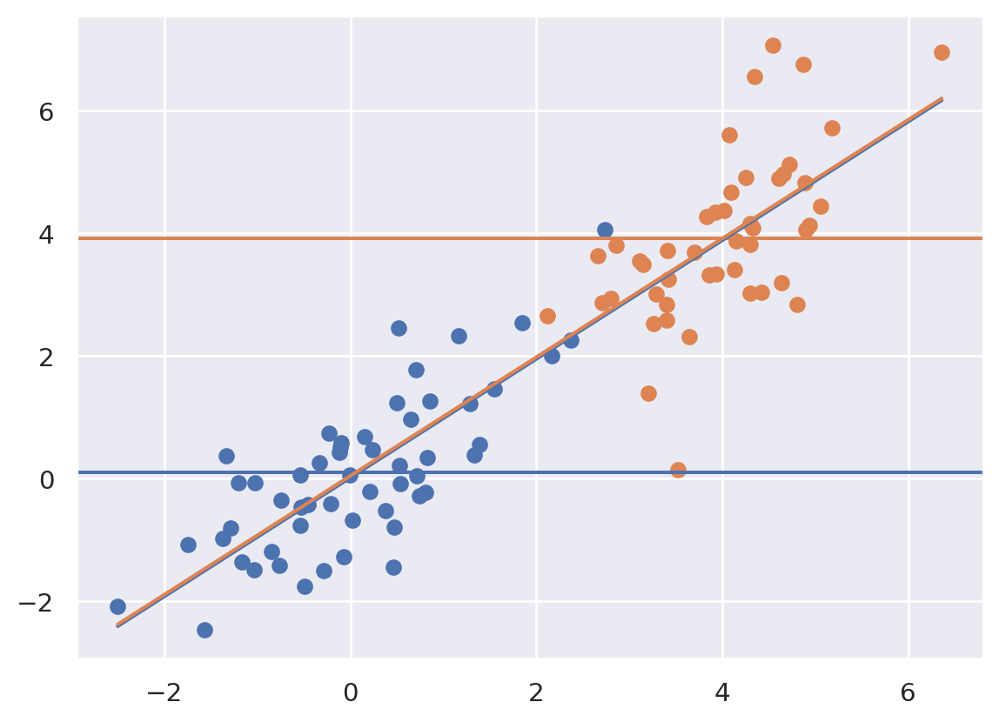
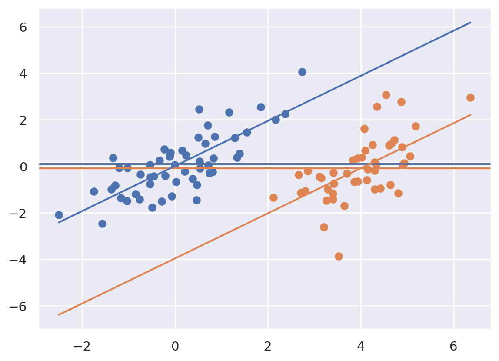
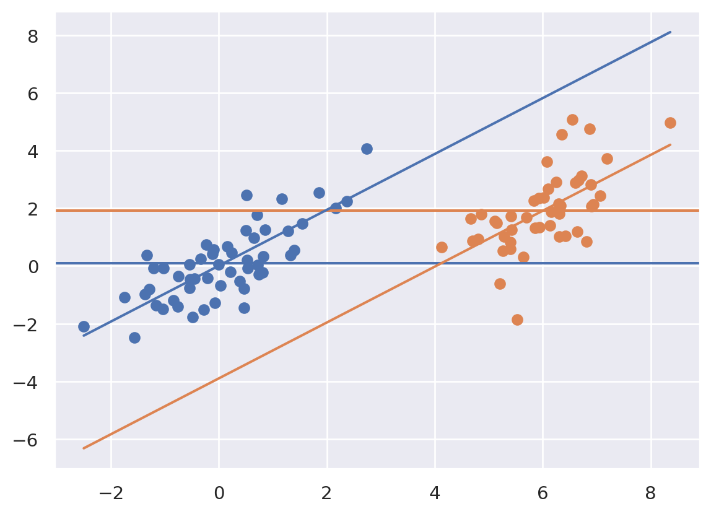

import numpy as np
import pandas as pd
import seaborn as sns
import matplotlib.pyplot as plt
import sklearn.linear_model as lm
import sklearn as skl
import statsmodels.formula.api as smf
import statsmodels as sm
## this sets some style parameters
sns.set()
## Read in the data
dat = pd.read_csv("https://raw.githubusercontent.com/bcaffo/ds4bme_intro/master/data/oasis.csv")30 Linear separable models
We’ve now covered two ways to do prediction with a single variable, classification using logistic regression and prediction using a line and least squares. What if we have several predictiors?
In both the logistic and linear regression models, we had a linear predictor, specifically,
\[ \eta_i = \beta_0 + \beta_1 x_i. \]
In the continuous case, we were modeling the expected value of the outcomes as linear. In the binary case, we were assuming that the naturual logarithm of the odds of a 1 outcome was linear.
To estimate the unknown parameters, \(\beta_0\) and \(\beta_1\) we minimized
\[ \sum_{i=1}^n || y_i - \eta_i||^2 \]
in the linear case and
\[ -\sum_{i=1}^n \left[ Y_i \eta_i + \log\left\{\frac{1}{1 + e^{\eta_i}} \right\} \right]. \]
in the binary outcome case (where, recall, \(\eta_i\) depends on the parameters). We can easily extend these models to multiple predictors by assuming that the impact of the multiple predictors is linear and separable. That is,
\[ \eta_i = \beta_0 + \beta_1 x_{1i} + \beta_2 x_{2i} + \ldots \beta_{p-1} x_{p-1,i} \]
If we think about this as vectors and matrices, we obtain
\[ \eta = X \beta \]
where \(\eta\) is an \(n \times 1\) vector, \(X\) is an \(n \times p\) matrix with \(i,j\) entry \(x_{ij}\) and \(\beta\) is a \(p\times 1\) vector with entries \(\beta_j\).
Let’s look at the voxel-level data that we’ve been working with. First let’s load the data.
Let’s first try to fit the proton density data from the other imaging data. I’m going to use the statsmodels version of linear models since it has a nice format for dataframes.
trainFraction = .75
sample = np.random.uniform(size = 100) < trainFraction
trainingDat = dat[sample]
testingDat = dat[~sample]results = smf.ols('PD ~ FLAIR + T1 + T2 + FLAIR_10 + T1_10 + T2_10 + FLAIR_20', data = trainingDat).fit()
print(results.summary2()) Results: Ordinary least squares
=================================================================
Model: OLS Adj. R-squared: 0.726
Dependent Variable: PD AIC: 55.1221
Date: 2023-12-30 11:13 BIC: 73.6620
No. Observations: 75 Log-Likelihood: -19.561
Df Model: 7 F-statistic: 29.03
Df Residuals: 67 Prob (F-statistic): 5.73e-18
R-squared: 0.752 Scale: 0.11042
------------------------------------------------------------------
Coef. Std.Err. t P>|t| [0.025 0.975]
------------------------------------------------------------------
Intercept 0.1283 0.1272 1.0086 0.3168 -0.1256 0.3822
FLAIR 0.0747 0.0806 0.9260 0.3578 -0.0863 0.2356
T1 -0.3471 0.0779 -4.4575 0.0000 -0.5025 -0.1917
T2 0.4224 0.0870 4.8528 0.0000 0.2486 0.5961
FLAIR_10 -0.0677 0.3303 -0.2048 0.8383 -0.7270 0.5917
T1_10 0.3769 0.1561 2.4137 0.0185 0.0652 0.6885
T2_10 0.1155 0.2512 0.4597 0.6473 -0.3860 0.6169
FLAIR_20 1.5173 0.7033 2.1575 0.0346 0.1136 2.9211
-----------------------------------------------------------------
Omnibus: 1.025 Durbin-Watson: 2.087
Prob(Omnibus): 0.599 Jarque-Bera (JB): 0.707
Skew: 0.236 Prob(JB): 0.702
Kurtosis: 3.061 Condition No.: 43
=================================================================
x = dat[['FLAIR','T1', 'T2', 'FLAIR_10', 'T1_10', 'T2_10', 'FLAIR_20']]
y = dat[['GOLD_Lesions']]
## Add the intercept column
x = sm.tools.add_constant(x)
xtraining = x[sample]
xtesting = x[~sample]
ytraining = y[sample]
ytesting = y[~sample]fit = sm.discrete.discrete_model.Logit(ytraining, xtraining).fit()Optimization terminated successfully.
Current function value: 0.233582
Iterations 9fit.summary()| Dep. Variable: | GOLD_Lesions | No. Observations: | 75 |
|---|---|---|---|
| Model: | Logit | Df Residuals: | 67 |
| Method: | MLE | Df Model: | 7 |
| Date: | Sat, 30 Dec 2023 | Pseudo R-squ.: | 0.6630 |
| Time: | 11:13:49 | Log-Likelihood: | -17.519 |
| converged: | True | LL-Null: | -51.979 |
| Covariance Type: | nonrobust | LLR p-value: | 2.440e-12 |
| coef | std err | z | P>|z| | [0.025 | 0.975] | |
|---|---|---|---|---|---|---|
| const | -2.2650 | 2.012 | -1.126 | 0.260 | -6.209 | 1.679 |
| FLAIR | 1.3765 | 1.250 | 1.102 | 0.271 | -1.073 | 3.826 |
| T1 | 4.2686 | 1.583 | 2.697 | 0.007 | 1.166 | 7.371 |
| T2 | 3.1742 | 1.547 | 2.052 | 0.040 | 0.143 | 6.205 |
| FLAIR_10 | 4.9115 | 4.194 | 1.171 | 0.242 | -3.309 | 13.132 |
| T1_10 | -0.2656 | 2.027 | -0.131 | 0.896 | -4.238 | 3.707 |
| T2_10 | -7.9347 | 3.463 | -2.291 | 0.022 | -14.723 | -1.147 |
| FLAIR_20 | -16.3760 | 8.107 | -2.020 | 0.043 | -32.265 | -0.487 |
Now let’s evaluate our prediction. Here, we’re not going to classify as 0 or 1, but rather estimate the prediction. Note, we then would need to pick a threshold to have a classifier. We could use .5 as our threshold. However, it’s often the case that we don’t necessarily want to threshold at specifically that level. A solution for evalution is to plot how the sensitivity and specificity change by the threshold.
In other words, consider the triplets \[
(t, sens(t), spec(t))
\] where \(t\) is the threshold, sens(t) is the sensitivity at threshold \(t\), spec(t) is the specificity at threshold t.
Necessarily, the sensitivity and specificity
phatTesting = fit.predict(xtesting)
## See here for plotting
## https://stackoverflow.com/questions/25009284/how-to-plot-roc-curve-in-python
fpr, tpr, threshold = skl.metrics.roc_curve(ytesting, phatTesting)
roc_auc = skl.metrics.auc(fpr, tpr)
# method I: plt
import matplotlib.pyplot as plt
plt.title('Receiver Operating Characteristic')
plt.plot(fpr, tpr, 'b', label = 'AUC = %0.2f' % roc_auc)
plt.legend(loc = 'lower right')
plt.plot([0, 1], [0, 1],'r--')
plt.xlim([0, 1])
plt.ylim([0, 1])
plt.ylabel('True Positive Rate')
plt.xlabel('False Positive Rate')
plt.show()
30.1 Aside different python packages
So far we’ve explored several plotting libraries including: default pandas methods, matplotlib, seaborn and plotly. We’ve also looked at several fitting libraries including to some extent numpy, but especially scikitlearn and statsmodels. What’s the difference? Well, these packages are all mantained by different people and have different features and goals. For example, scikitlearn is more expansive than statsmodels, but statsmodels functions more like one is used to with statistical output. Matplotlib is very expansive, but seaborn has nicer default options and is a little easier. So, when doing data science with python, one has to get used to trying out a few packages, weighing the cost and benefits of each, and picking one.
‘statsmodels’, what we’re using above, has multiple methods for fitting binary models including: sm.Logit, smf.logit, BinaryModel and glm. Here I’m just going to use Logit which does not use the formula syntax of logit. Note, by default, this does not add an intercept this way. So, I’m adding a column of ones, which adds an intercept.
Consider the following which uses the formula API
results = smf.logit(formula = 'GOLD_Lesions ~ FLAIR + T1 + T2 + FLAIR_10 + T1_10 + T2_10 + FLAIR_20', data = trainingDat).fit()
results.summary()Optimization terminated successfully.
Current function value: 0.233582
Iterations 9| Dep. Variable: | GOLD_Lesions | No. Observations: | 75 |
|---|---|---|---|
| Model: | Logit | Df Residuals: | 67 |
| Method: | MLE | Df Model: | 7 |
| Date: | Sat, 30 Dec 2023 | Pseudo R-squ.: | 0.6630 |
| Time: | 11:13:49 | Log-Likelihood: | -17.519 |
| converged: | True | LL-Null: | -51.979 |
| Covariance Type: | nonrobust | LLR p-value: | 2.440e-12 |
| coef | std err | z | P>|z| | [0.025 | 0.975] | |
|---|---|---|---|---|---|---|
| Intercept | -2.2650 | 2.012 | -1.126 | 0.260 | -6.209 | 1.679 |
| FLAIR | 1.3765 | 1.250 | 1.102 | 0.271 | -1.073 | 3.826 |
| T1 | 4.2686 | 1.583 | 2.697 | 0.007 | 1.166 | 7.371 |
| T2 | 3.1742 | 1.547 | 2.052 | 0.040 | 0.143 | 6.205 |
| FLAIR_10 | 4.9115 | 4.194 | 1.171 | 0.242 | -3.309 | 13.132 |
| T1_10 | -0.2656 | 2.027 | -0.131 | 0.896 | -4.238 | 3.707 |
| T2_10 | -7.9347 | 3.463 | -2.291 | 0.022 | -14.723 | -1.147 |
| FLAIR_20 | -16.3760 | 8.107 | -2.020 | 0.043 | -32.265 | -0.487 |
30.2 A classic example
from sklearn.linear_model import LinearRegressiondat = pd.read_csv("https://raw.githubusercontent.com/bcaffo/ds4bme_intro/master/data/swiss.csv")
dat.head()| Region | Fertility | Agriculture | Examination | Education | Catholic | Infant.Mortality | |
|---|---|---|---|---|---|---|---|
| 0 | Courtelary | 80.2 | 17.0 | 15 | 12 | 9.96 | 22.2 |
| 1 | Delemont | 83.1 | 45.1 | 6 | 9 | 84.84 | 22.2 |
| 2 | Franches-Mnt | 92.5 | 39.7 | 5 | 5 | 93.40 | 20.2 |
| 3 | Moutier | 85.8 | 36.5 | 12 | 7 | 33.77 | 20.3 |
| 4 | Neuveville | 76.9 | 43.5 | 17 | 15 | 5.16 | 20.6 |
y = dat.Fertility
x = dat.drop(['Region', 'Fertility'], axis=1)
fit = LinearRegression().fit(x, y)
yhat = fit.predict(x)
[fit.intercept_, fit.coef_][66.9151816789687,
array([-0.17211397, -0.25800824, -0.87094006, 0.10411533, 1.07704814])]x2 = x
x2['Test'] = x2.Agriculture + x2.Examination
fit2 = LinearRegression().fit(x2, y)
yhat2 = fit2.predict(x2)plt.plot(yhat, yhat2)
x3 = x2.drop(['Agriculture'], axis = 1)
fit3 = LinearRegression().fit(x3, y)
yhat3 = fit3.predict(x3)
plt.plot(yhat, yhat3)
30.3 Regression interpretation
Let’s consider how adjustment works in regression by considering a so called ANCOVA (analysis of covariance) setting. Imagine, there’s treatment variable that we’re ineterested in, \(T_i\), and a regression variable that we have to adjust for, \(X_i\). Consider this specific variation of this setting:
\[ Y_i = \beta_0 + \beta_1 X_i + \beta_2 T_i + \epsilon_i \]
To tie ourselves down with a context, consider \(Y_i\) is blood pressure, \(T_i\) is a medication and \(X_i\) is BMI. Let’s look at different settings that could arise using plots.
Since I’m going to be making the same plot over and over, I defined a function that
- fit the ANCOVA model using sklearn
- plotted the data as \(X\) versus \(Y\) with orange versus blue for treated versus not
- added the fitted ANCOVA lines plus the marginal means (the means for each group disregarding \(X\)) as horizontal lines
Note, the adjusted estimated treatment effect is the difference between the two parallel sloped lines. The unadjusted estimated treatment effect is the difference between the two horizontal lines. Let’s look at how adjustment changes things depending on the setting. First we’ll do our imports and then define a function that will make our plot for us and fit the ANCOVA model.
import pandas as pd
import matplotlib.pyplot as plt
import seaborn as sns
import numpy as np
import pandas as pd
from sklearn.linear_model import LinearRegression
import copy
sns.set()def myplot(x, y, t):
x1 = x[t == 1]
x0 = x[t == 0]
y1 = y[t == 1]
y0 = y[t == 0]
xm1 = np.mean(x1)
xm0 = np.mean(x0)
ym1 = np.mean(y1)
ym0 = np.mean(y0)
X = np.array([x, t]).transpose()
out = LinearRegression().fit(X, y)
b0hat = out.intercept_
b1hat = out.coef_[0]
b2hat = out.coef_[1]
plt.scatter(x0, y0)
plt.scatter(x1, y1)
col = sns.color_palette()
plt.axhline(y = ym0, c = col[0])
plt.axhline(y = ym1, c = col[1])
xlim = [np.min(x), np.max(x)]
ylim0 = [z * b1hat + b0hat + b2hat for z in xlim]
ylim1 = [z * b1hat + b0hat for z in xlim]
plt.plot( xlim, ylim1)
plt.plot( xlim, ylim0)
plt.show()Let’s consider out model with \(\beta_0 = 0\), \(\beta_1 = 1\) and \(\beta_2 = 4\). So the treated have an intercept 4 units higher. Let’s consider simulating from this model where the treatment is randomized.
n = 100
x = np.random.normal(size = n)
e = np.random.normal(size = n)
t = np.random.binomial(1, .5, n)
beta0 = 0
beta1 = 1
beta2 = 4
y = beta0 + beta1 * x + beta2 * t + e
myplot(x, y, t)
Notice that the marginal means (horizontal lines) are about 4 units appart, same as the lines. This is due to the randomization. A goal of randomization is to make our inference for the treatment unrelated to whether or not we adjust for the confounding variable (\(X\)). So, we get (up to random error) the ssame answer whether we adjust for \(X\) or not. Let’s consider a different setting.
myplot(x + t * 4, y, t)
Now notice that there is a large unadjusted difference (difference between the horizontal lines) whereas there is not much of a difference between the lines. That is, when adjusting for \(X\), the relationship goes away. Of note, treatment assignment is highly related to the \(X\) variable. Orange dots tend to have a larger \(X\) value than the blue. Because of this, there’s pratically no area of overlap between the orange and the blue to directly compare them. The adjusted model is all model, extrapolating the blue line up to the orange and the orange down to the blue assuming that they’re parallel.
myplot(x + t * 4, y - t * 4, t)
Above notice that the result is the reverse. There’s little association marginally, but a large one when conditioning. Let’s look at one final case.
myplot(x + t * 6, y - t * 2, t)
Above things are even worse, the relationship has reversed itself. The marginal association is that the orange is above the blue whereas the conditional association is that the blue is above the orange. That is, if you fit the treatment model without \(X\) you get one answer, and with \(X\) you get the exact opposite answer! This is an example of so-called “Simpsons paradox”. The “paradox” isn’t that paradoxical. It simply says the relationship between two variables could reverse itself when factoring in another variable. Once again, note there’s no overlap in the distributions.